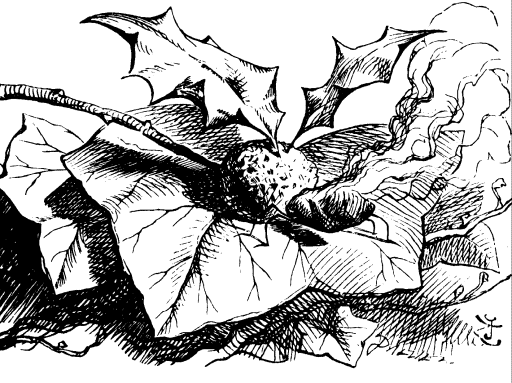
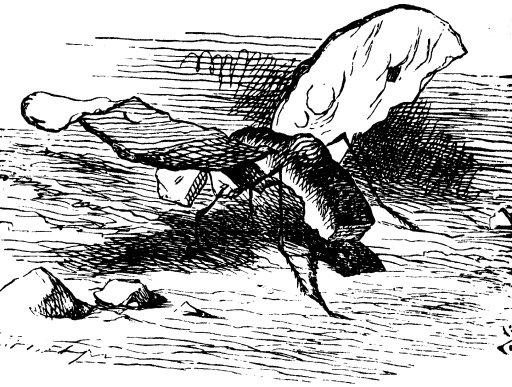
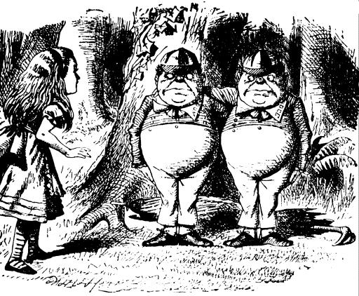
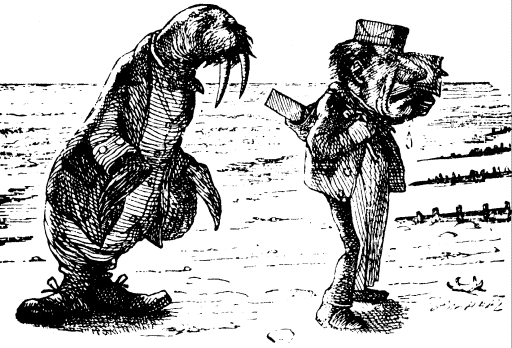
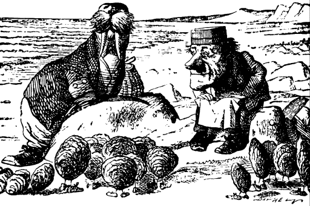
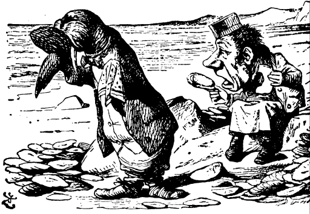
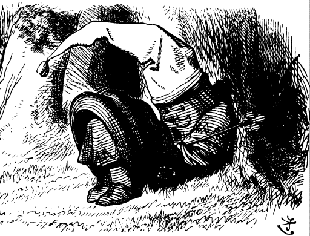

THEY were standing under a tree each with an arm round the other's neck, and Alice knew which was which in a moment, because one of them had "DUM" embroidered on his collar, and the other "DEE." "I suppose they've each got "TWEEDLE" round at the back of the collar," she said to herseLf,
They stood so still that she quite forgot they were alive, and she was just looking round to see if the word "TWEEDLE" was written at the back of each collar, when she was startled by a voice coming from the one marked "DUM."
"If you think we're wax-works," he said, "you ought to pay, you know. Wax-works weren't made to be looked at for nothing. Nohow!"
"Contrariwise" added the one marked "DEE", "if you think we're alive, you ought to speak."
"I'm sure I'm very sorry," was all Alice could say; for the words of the old song kept ringing through her head like the ticking of a clock, and she could hardly help saying them out loud:---
Tweedledum and Tweedledee Agreed to have a battle; For Tweedledum said Tweedledee Had spoiled his nice new rattle. Just then flew down a monstrous crow, As black as a tar-barrel; Which frightened both the heroes so, They quite forgot their quarrel.
"I know what you're thinking about," said Tweedledum: "but it isn't so, nohow."

"Contrariwise," continued Tweedledee, "if it was so, it might be; and if it were so, it would be: but as it isn't, it ain't. 'That's logic."
"I was thinking," Alice said very politely, "which is the best way out of this wood: it's getting so dark. Would you tell me, please ?"
But the fat little men only looked at each other and grinned.
They looked so exactly like a couple of great schoolboys, that Alice couldn't help pointing her finger at Tweedledum, and saying, "First Boy!"
"Nohow!" Tweedledum cried out briskly, and instantly shut his mouth up again with a snap.
"Next Boy!" said Alice, passing on to T weedledee, though she felt quite certain he would only shout out "Contrariwise!" and so he did.
"You've begun wrong!" cried Tweedledum. "The first thing in a visit is to say, "How d'ye do?' and shake hands!" And here the two brothers gave each other a hug, and then they held out the two hands that were free, to shake hands with her.
Alice did not like shaking hands with either of them first, for fear of hurting the other one's feelings; so, as the best way out of the difficulty, she took hold of both hands at once: the next moment they were dancing round in a ring. This seemed quite natural (she remembered afterwards), and she was not even surprised to hear music playing: it seemed to come from the tree under which they were dancing, and it was done (as well as she could make it out) by the branches rubbing one across the other, like fiddles and fiddlesticks.
"But it certainly was funny" (Alice said afterwards, when she was telling her sister the history of all this) "to find myself singing "Here we go round the mulberry bush.' I don't know when I began it, but somehow I felt as if I'd been singing it a long, long time!"
The other two dancers were fat, and very soon out of breath. "Four times round is enough for one dance," Tweedledum panted out, and they left off dancing as suddenly as they had begun: the music stopped at the same moment.
Then they let go of Alice's hands, and stood looking at her for a minute: there was a rather awkward pause, as Alice didn't know how to begin a conversation with people she had just been dancing with. "It would never do to say "How d'ye do? now," she said to herself: "we seem to have got beyond that, somehow!"
"I hope you're not much tired?" she said at last.
"Nohow. And thank you very much for asking," said Tweedledum.
"So much obliged!" added Tweedledee. "You like poetry?"
"Ye-es, pretty well--some poetry," Alice said doubtfully. "Would you tell me which road leads out of the wood?"
"What shall I repeat to her?" said Tweedledee looking round at Tweedledum with great solemn eyes, and not noticing Alice's question.
"'The Walrus and the Carpenter' is the longest," Tweedledum replied, giving his brother an affectionate hug.
Tweedledee began instantly:
"The sun was shining---"
Here Alice ventured to interrupt. "If it's very long," she said, as politely as she could, "would you tell me first which road---"
Tweedledee smiled gently, and began again:
The sun was shining on the sea, Shining with all his might: He did his very best to make The billows smooth and bright-- And this was odd, because it was The middle of the night. The moon was shining sulkily, Because she thought the sun Had got no business to be there After the day was done-- "It's very rude of him," she said, "To come and spoil the fun!" The sea was wet as wet could be, The sands were dry as dry. You could not see a cloud, because No cloud was in the sky: No birds were flying overhead-- There were no birds to fly. The Walrus and the Carpenter Were walking close at hand; They wept like anything to see Such quantities of sand: "If this were only cleared away," They said, "it would be grand!"  "If seven maids with seven mops Swept it for half a year. Do you suppose," the Walrus said, "That they could get it clear?" "I doubt it," said the Carpenter, And shed a bitter tear. "O Oysters, come and walk with us.!" The Walrus did beseech. "A pleasant walk, a pleasant talk, Along the briny beach: We cannot do with more than four, To give a hand to each." The eldest Oyster looked at him, But never a word he said: The eldest Oyster winked his, eye, And shook his heavy head-- Meaning to say he did not choose To leave the oyster-bed. But four young Oysters hurried up, All eager for the treat: Their coats were brushed, their faces washed, Their shoes were clean and neat-- And this was odd, because, you know, They hadn't any feet. Four other Oysters followed them, And yet another four; And thick and fast they came at last, And more, and more, and more-- All hopping through the frothy waves, And scrambling to the shore. The Walrus and the Carpenter Walked on a mile or so, And then they rested on a rock Conveniently low: And all the little Oysters stood And waited in a row. "The time has come," the Walrus said, "To talk of many things: Of shoes--and ships--and sealing-wax-- Of cabbages--and kings-- And why the sea is boiling hot-- And whether pigs have wings."  "But wait a bit," the Oysters cried, "Before we have our chat; For some of us are out of breath, And all of us are fat!" "No hurry!" said the Carpenter. They thanked him much for that. "A loaf of bread," the Walrus said, "Is what we chiefly need: Pepper and vinegar besides Are very good indeed-- Now if you're ready, Oysters dear, We can begin to feed." "But not on us!" the Oysters cried, Turning a little blue. "After such kindness, that would be A dismal thing to do!" "The night is fine," the Walrus said. "Do you admire the view? "It was so kind of you to come! And you are very nice!" The Carpenter said nothing but "Cut us another slice: I wish you were not quite so deaf-- I've had to ask you twice!"  "It seems a shame," the Walrus said, "To play them such a trick, After we've brought them out so far, And made them trot so quick!" The Carpenter said nothing but "The butter's spread too thick!" "I weep for you," the Walrus said: "I deeply sympathize." With sobs and tears he sorted out Those of the largest size, Holding his pocket-handkerchief Before his streaming eyes. "O Oysters," said the Carpenter, "You've had a pleasant run! Shall we be trotting home again?' But answer came there none-- And this was scarcely odd, because They'd eaten every one."
"I like the Walrus best," said Alice: "because you see he was a little story for the poor oysters."
"He ate more than the Carpenter, though" said Tweedledee. "You see he held his handkerchief in front, so that the Carpenter couldn't count how many he took: contrariwise."
"That was mean!" Alice said indignantly. "Then I like the Carpenter best--if he didn't eat so many as the Walrus."
"But he ate as many as he could get," said Tweedledum.
This was a puzzler. After a pause, Alice began, "Well! They were both very unpleasant characters---" Here she checked herself in some alarm, at hearing something that sounded to her like the puffng of a large steam-engine in the wood near them, though she feared it was more likely to be a wild beast. "Are there any lions or tigers about here?" she asked timidly.
"lt's only the Red King snoring," said Tweedledee.
"Come and look at him!" the brothers cried, and they each took one of Alice's hands, and led her up to where the King was sleeping.
"Isn't he a lovely sight?" said Tweedledum.

Alice couldn't say honestly that he was. He had a tall red night-cap on, with a tassel, and he was lying crumpled up into a sort of untidy heap, and snoring loud--"fit to snore his head off!" as Tweedledum remarked.
"I'm afraid he'll catch cold with lying on the damp grass," said Alice, who was a very thoughtful little girl.
"He's dreaming now," said Tweedledee: "and what do you think he's dreaming about?"
Alice said, "Nobody can guess that."
"Why, about you!" Tweedledee exclaimed, clapping his hands triumphantly. "And if he left off dreaming about you, where do you suppose you'd be?"
"Where I am now, of course," said Alice.
"Not you!" Tweedledee retorted contemptuously. "You'd be nowhere. Why, you're only a sort of thing in his dream!"
"If that there King was to wake," added T weedledum, "you'd go out--bang!--just llke a candle!"
"I shouldn't!" Alice exclaimed indignantly. "Besides, if I'm only a sort of thing in his dream, what are you, I should like to know?"
"Ditto," said Tweedledum.
"Ditto, ditto!" cried Tweedledee.
He shouted this so loud that Alice couldn't help saying, "Hush! You'll be waking him, I'm afraid, if you make so much noise."
"Well, it's no use your talking about waking him," said Tweedledum, "when you're only one of the things in his dream. You know very well you're not real."
"I am real!" said Alice, and began to cry.
"You won't make yourself a bit realer by crying," Tweedledee remarked: "there's nothing to cry about."
"If I wasn't real," Alice said--half-laughing through her tears, it all seemed so ridiculous-- "I shouldn't be able to cry."
"I hope you don't suppose those are real tears?" Tweedledum interrupted in a tone of great contempt.
"I know they're talking nonsense," Alice thought to herself: "and it's foolish to cry about it." So she brushed away her tears, and went on as cheerfully as she could, "At any rate I'd better be getting out of the wood, for really it's coming on very dark. Do you think it's going to rain?"
Tweedledum spread a large umbrella over himself and his brother, and looked up into it. "No, I don't think it is," he said: "at least--not under here. Nohow."
"But it may rain outside?"

"It may--if it chooses," said Tweedledee: "we've no objection. Contrariwise."
"Selfish things!" thought Alice, and she was just going to say "Good-night" and leave them, when Tweedledum sprang out from under the umbrella, and seized her by the wrist.
"Do you see that?" he said in a voice choking with passion, and his eyes grew large and yellow all in a moment, as he pointed with a trembling finger at a small white thing lying under the tree.
"It's only a rattle," Alice said, after a careful examination of the little white thing. "Not a rattle-snake, you know," she added hastily, thinking that he was frightened: "only an old rattle-- quite old and broken."
"I knew it was!" cried Tweedledum, beginning to stamp about wildly and tear his hair. "It's spoilt, of course!" Here he looked at Tweedledee, who immediately sat down on the ground, and tried to hide himself under the umbrella.
Alice laid her hand upon his arm, and said in a soothing tone, "You needn't be so angry about an old rattle."
"But it isn't old!" Tweedledum cried, in a greater fury than ever. "It's new, I tell you--I bought it yesterday--my nice NEW RATTLE!" and his voice rose to a perfect scream.

All this time Tweedledee was trying his best to fold up the umbrella, with himself in it: which was such an extraordinary thing to do, that it quite took off Alice's attention from the angry brother. But he couldn't quite succeed, and it ended in his rolling over, bundled up in the umbrella, with only his head out: and there he lay, opening and shutting his mouth and his large eyes--"looking more like a fish than anything else," Alice thought.
"Of course you agree to have a battle?" Tweedledum said in a calmer tone.
"I suppose so," the other sulkily replied, as he crawled out of the umbrella: "only she must help us to dress up, you know."
So the two brothers went off hand-in-hand into the wood, and returned in a minute with their arms full of things--such as bolsters, blankets, hearthrugs, table-cloths, dish-covers, and coal-scuttles, "I hope you're a good hand at pinning and tying strings?" Tweedledum remarked. "Every one of these things has got to go on, somehow or other."
Alice said afterwards she had never seen such a fuss made about anything in all her life--the way those two bustled about--and the quantity of things they put on--and the trouble they gave her in tying strings and fastening buttons--"Really they'll be more like bundles of old clothes than anything else, by the time they're ready!" she said to herself, as she arranged a bolster round the neck of Tweedledee, "to keep his head from being cut off," as he said.
"You know," he added very gravely, "it's one of the most serious things that can possibly happen to one in a battle--to get one's head cut off."
Alice laughed loud, but managed to turn it into a cough, for fear of hurting his feelings.
"Do I look very pale?" said Tweedledum, coming up to have his helmet tied on. (He called it a helmet, though it certainly looked much more like a saucepan.)
"Well--yes--a little," Alice replied gently.
"I'm very brave generally," he went on in a low voice: "only to-day I happen to have a headache."
"And I've got a toothache!" said Tweedledee, who had overheard the remark. "I'm far worse than you!"
"Then you'd better not fight to-day," said Alice, thinking it a good opportunity to make peace.
"We must have a bit of a fight, but I don't care about going on long," said Tweedledum. "What's the time now?"
Tweedledee looked at his watch, and said, "Halfpast four."
"Let's fight till six, and then have dinner," said Tweedledum.
"Very well," the other said, rather sadly: "and she can watch us--only you'd better not come very close," he added: "I generally hit everything I can see--when I get really excited."
"And I hit everything within reach," cried Tweedledum, "whether I can see it or not!"
Alice laughed. "You must hit the trees pretty often, I should think," she said.
Tweedledum looked round him with a satisfied smile. "I don't suppose," he said, "there'll be a tree left standing, for ever so far round, by the time we've finished!"
"And all about a rattle!" said Alice, still hoping to make them a little ashamed of fighting for such a trifle.
"I shouldn't have minded it so much," said Tweedledum, "if it hadn't been a new one."
"I wish the monstrous crow would come!" thought Alice.
"There's only one sword, you know," Tweedledum said to his brother: "but you can have the umbrella--it's quite as sharp. Only we must begin quick. It's getting as dark as it can."
"And darker," said Tweedledee.
It was getting dark so suddenly that Alice thought there must be a thunderstorm coming on. "What a thick black cloud that is!" she said. "And how fast it comes! Why, I do believe it's got wings!"
"It's the crow!" Tweedledum cried out in a shrill voice of alarm: and the two brothers took to their heels and were out of sight in a moment.
Alice ran a little way into the wood, and stopped under a large tree. "It can never get at me here," she thought: "it's far too large to squeeze itself in among the trees. But I wish it wouldn't flap its wings so--it makes quite a hurricane in the wood-- here's somebody's shawl being blown away!"